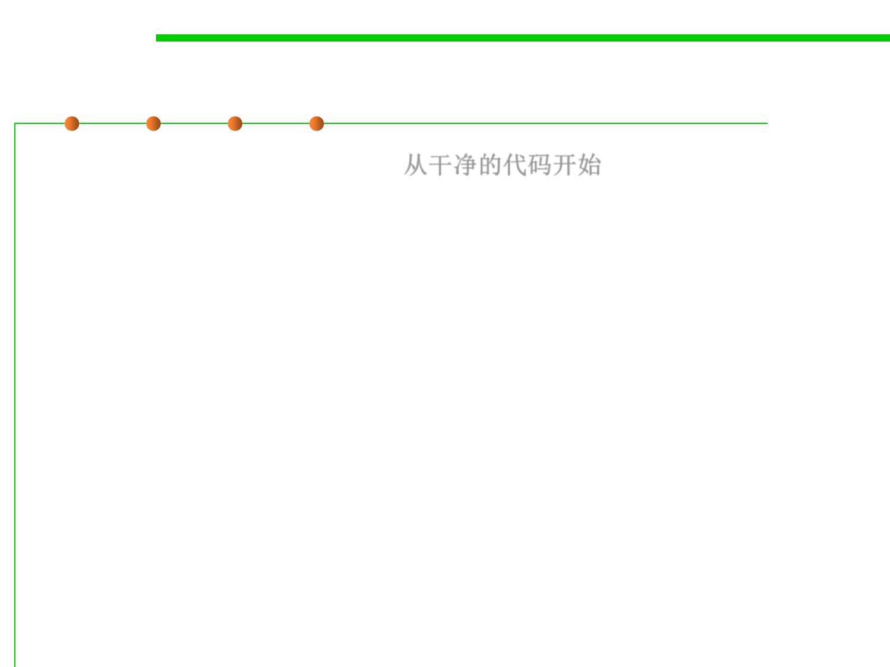

Fix: Start from a clean source tree
7.4 Debugging
▪ Start from a clean source tree 从干净的代码开始
– Before diving in and starting to design your fix, the first order of business
is to ensure that you start from a clean source tree.
▪ Work out how you’re going to test your fix before making changes.
▪ Use testing to ensure that you’re working on a clean source tree
and fixing rightly.
– 1. Run the existing tests, and demonstrate that they pass.
– 2. Add one or more new tests, or fix the existing tests, to demonstrate the
bug (in other words, to fail).
– 3. Fix the bug.
– 4. Demonstrate that your fix works (the failing tests no longer fail).
– 5. Demonstrate that you haven’t introduced any regressions (none of the
tests that previously passed now fail).